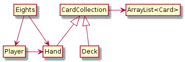

14 Extending Classes
In this chapter, we present a more comprehensive example of object-oriented programming.
Crazy Eights is a classic card game for two or more players. The main objective is to be the first player to get rid of all your cards. Here’s how to play:
Deal five or more cards to each player, and then deal one card face up to create the “discard pile”. Place the remaining cards face down to create the “draw pile”.
Each player takes turns placing a single card on the discard pile. The card must match the rank or suit of the previously played card, or be an eight, which is a “wild card”.
When players don’t have a matching card or an eight, they must draw new cards until they get one.
If the draw pile ever runs out, the discard pile is shuffled (except the top card) and becomes the new draw pile.
As soon as a player has no cards, the game ends, and all other players score penalty points for their remaining cards. Eights are worth 20, face cards are worth 10, and all others are worth their rank.
You can read https://en.wikipedia.org/wiki/Crazy_Eights for more details, but we have enough to get started.
14.1 CardCollection
To implement Crazy Eights, we need to represent a deck of cards, a discard pile, a draw pile, and a hand for each player. And we need to be able to deal, draw, and discard cards.
The Deck and Pile classes from the previous chapter meet some of these requirements. But unless we make some changes, neither of them represents a hand of cards very well.
Furthermore, Deck and Pile are essentially two versions of the same code: one based on arrays, and the other based on ArrayList. It would be helpful to combine their features into one class that meets the needs of both.
We will define a class named CardCollection and add the code we want one step at a time. Since this class will represent different piles and hands of cards, we’ll add a label attribute to tell them apart:
public class CardCollection {
private String label;
private ArrayList<Card> cards;
public CardCollection(String label) {
this.label = label;
this.cards = new ArrayList<Card>();
}
}As with the Pile class, we need a way to add cards to the collection. Here is the addCard method from the previous chapter:
public void addCard(Card card) {
this.cards.add(card);
}Until now, we have used this explicitly to make it easy to identify attributes. Inside addCard and other instance methods, you can access instance variables without using the keyword this. So from here on, we will drop it:
public void addCard(Card card) {
cards.add(card);
}We also need to be able to remove cards from the collection. The following method takes an index, removes the card at that location, and shifts the following cards left to fill the gap:
public Card popCard(int i) {
return cards.remove(i);
}If we are dealing cards from a shuffled deck, we don’t care which card gets removed. It is most efficient to choose the last one, so we don’t have to shift any cards left. Here is an overloaded version of popCard that removes and returns the last card:
public Card popCard() {
int i = cards.size() - 1; // from the end of the list
return popCard(i);
}CardCollection also provides isEmpty, which returns true if there are no cards left, and size, which returns the number of cards:
public boolean isEmpty() {
return cards.isEmpty();
}public int size() {
return cards.size();
}To access the elements of an ArrayList, you can’t use the array [] operator. Instead, you have to use the methods get and set. Here is a wrapper for get:
public Card getCard(int i) {
return cards.get(i);
}lastCard gets the last card (but doesn’t remove it):
public Card lastCard() {
int i = cards.size() - 1;
return cards.get(i);
}In order to control the ways card collections are modified, we don’t provide a wrapper for set. The only modifiers we provide are the two versions of popCard and the following version of swapCards:
public void swapCards(int i, int j) {
Card temp = cards.get(i);
cards.set(i, cards.get(j));
cards.set(j, temp);
}Finally, we use swapCards to implement shuffle, which we described in Section 13.2:
public void shuffle() {
Random random = new Random();
for (int i = cards.size() - 1; i > 0; i--) {
int j = random.nextInt(i + 1);
swapCards(i, j);
}
}14.2 Inheritance
At this point, we have a class that represents a collection of cards. It provides functionality common to decks of cards, piles of cards, hands of cards, and potentially other collections.
However, each kind of collection will be slightly different. Rather than add every possible feature to CardCollection, we can use inheritance to define subclasses. A subclass is a class that “extends” an existing class; that is, it has the attributes and methods of the existing class, plus more.
Here is the complete definition of our new and improved Deck class:
public class Deck extends CardCollection {
public Deck(String label) {
super(label);
for (int suit = 0; suit <= 3; suit++) {
for (int rank = 1; rank <= 13; rank++) {
addCard(new Card(rank, suit));
}
}
}
}The first line uses the keyword extends to indicate that Deck extends the class CardCollection. That means a Deck object has the same instance variables and methods as a CardCollection. Another way to say the same thing is that Deck “inherits from” CardCollection. We could also say that CardCollection is a superclass, and Deck is one of its subclasses.
In Java, classes may extend only one superclass. Classes that do not specify a superclass with extends automatically inherit from java.lang.Object. So in this example, Deck extends CardCollection, which in turn extends Object. The Object class provides the default equals and toString methods, among other things.
Constructors are not inherited, but all other public attributes and methods are. The only additional method in Deck, at least for now, is a constructor. So you can create a Deck object like this:
Deck deck = new Deck("Deck");The first line of the constructor uses super, which is a keyword that refers to the superclass of the current class. When super is used as a method, as in this example, it invokes the constructor of the superclass.
So in this case, super invokes the CardCollection constructor, which initializes the attributes label and cards. When it returns, the Deck constructor resumes and populates the (empty) ArrayList with Card objects.
That’s it for the Deck class. Next we need a way to represent a hand, which is the collection of cards held by a player, and a pile, which is a collection of cards on the table. We could define two classes, one for hands and one for piles, but there is not much difference between them. So we’ll use one class, called Hand, for both hands and piles. Here’s what the definition looks like:
public class Hand extends CardCollection {
public Hand(String label) {
super(label);
}
public void display() {
System.out.println(getLabel() + ": ");
for (int i = 0; i < size(); i++) {
System.out.println(getCard(i));
}
System.out.println();
}
}Like Deck, the Hand class extends CardCollection. So it inherits methods like getLabel, size, and getCard, which are used in display. Hand also provides a constructor, which invokes the constructor of CardCollection.
In summary, a Deck is just like a CardCollection, but it provides a different constructor. And a Hand is just like a CardCollection, but it provides an additional method, display.
14.3 Dealing Cards
To begin the game, we need to deal cards to each of the players. And during the game, we need to move cards between hands and piles. If we add the following method to CardCollection, it can meet both of these requirements:
public void deal(CardCollection that, int n) {
for (int i = 0; i < n; i++) {
Card card = popCard();
that.addCard(card);
}
}The deal method removes cards from the collection it is invoked on, this, and adds them to the collection it gets as a parameter, that. The second parameter, n, is the number of cards to deal. We will use this method to implement dealAll, which deals (or moves) all of the remaining cards:
public void dealAll(CardCollection that) {
int n = cards.size();
deal(that, n);
}At this point, we can create a Deck and start dealing cards. Here’s a simple example that deals five cards to a hand, and deals the rest into a draw pile:
Deck deck = new Deck("Deck");
deck.shuffle();
Hand hand = new Hand("Hand");
deck.deal(hand, 5);
hand.display();
Hand drawPile = new Hand("Draw Pile");
deck.dealAll(drawPile);
System.out.printf("Draw Pile has %d cards.\n",
drawPile.size());Because the deck is shuffled randomly, you should get a different hand each time you run this example. The output will look something like this:
Hand:
5 of Diamonds
Ace of Hearts
6 of Clubs
6 of Diamonds
2 of Clubs
Draw Pile has 47 cards.If you are a careful reader, you might notice something strange about this example. Take another look at the definition of deal. Notice that the first parameter is supposed to be a CardCollection. But we invoked it like this:
Hand hand = new Hand("Hand");
deck.deal(hand, 5);The argument is a Hand, not a CardCollection. So why is this example legal?
It’s because Hand is a subclass of CardCollection, so a Hand object is also considered to be a CardCollection object. If a method expects a CardCollection, you can give it a Hand, a Deck, or a CardCollection.
But it doesn’t work the other way around: not every CardCollection is a Hand, so if a method expects a Hand, you have to give it a Hand, not a CardCollection or a Deck.
If it seems strange that an object can belong to more than one type, remember that this happens in real life too. Every cat is also a mammal, and every mammal is also an animal. But not every animal is a mammal, and not every mammal is a cat.
14.4 The Player Class
The Deck and Hand classes we have defined so far could be used for any card game; we have not yet implemented any of the rules specific to Crazy Eights. And that’s probably a good thing, since it makes it easy to reuse these classes if we want to make another game in the future.
But now it’s time to implement the rules. We’ll use two classes: Player, which encapsulates player strategy, and Eights, which creates and maintains the state of the game. Here is the beginning of the Player definition:
public class Player {
private String name;
private Hand hand;
public Player(String name) {
this.name = name;
this.hand = new Hand(name);
}A Player has two private attributes: a name and a hand. The constructor takes the player’s name as a string and saves it in an instance variable. In this example, we have to use this to distinguish between the instance variable and the parameter with the same name.
The primary method that Player provides is play, which decides which card to discard during each turn:
public Card play(Eights eights, Card prev) {
Card card = searchForMatch(prev);
if (card == null) {
card = drawForMatch(eights, prev);
}
return card;
}The first parameter is a reference to the Eights object that encapsulates the state of the game (coming up in the next section). The second parameter, prev, is the card on top of the discard pile.
play invokes two helper methods: searchForMatch and drawForMatch. Since we have not written them yet, this is an example of top-down design.
Here’s searchForMatch, which looks in the player’s hand for a card that matches the previously played card:
public Card searchForMatch(Card prev) {
for (int i = 0; i < hand.size(); i++) {
Card card = hand.getCard(i);
if (cardMatches(card, prev)) {
return hand.popCard(i);
}
}
return null;
}The strategy is pretty simple: the for loop searches for the first card that’s legal to play and returns it. If there are no cards that match, it returns null. In that case, we have to draw cards until we get a match, which is what drawForMatch does:
public Card drawForMatch(Eights eights, Card prev) {
while (true) {
Card card = eights.drawCard();
System.out.println(name + " draws " + card);
if (cardMatches(card, prev)) {
return card;
}
hand.addCard(card);
}
}The while loop runs until it finds a match (we’ll assume for now that it always finds one). The loop uses the Eights object to draw a card. If it matches, drawForMatch returns the card. Otherwise it adds the card to the player’s hand and repeats.
Both searchForMatch and drawForMatch use cardMatches, which is a static method, also defined in Player. This method is a straightforward translation of the rules of the game:
public static boolean cardMatches(Card card1, Card card2) {
return card1.getSuit() == card2.getSuit()
|| card1.getRank() == card2.getRank()
|| card1.getRank() == 8;
}Finally, Player provides a score method, which computes penalty points for cards left in a player’s hand at the end of the game.
14.5 The Eights Class
In Section 13.2, we introduced top-down design. In this way of developing programs, we identify high-level goals, like shuffling a deck, and break them into smaller problems, like choosing a random element or swapping two elements.
In this section, we present bottom-up design, which goes the other way around: first we identify simple pieces we need and then we assemble them into more-complex algorithms.
Looking at the rules of Crazy Eights, we can identify some of the methods we’ll need:
Create the deck, the players, and the discard and draw piles. Deal the cards and set up the game. (
Eightsconstructor)Check whether the game is over. (
isDone)If the draw pile is empty, shuffle the discard pile and move the cards into the draw pile. (
reshuffle)Draw a card, reshuffling the discard pile if necessary. (
drawCard)Keep track of whose turn it is, and switch from one player to the next. (
nextPlayer)Display the state of the game, and wait for the user before running the next turn. (
displayState)
Now we can start implementing the pieces. Here is the beginning of the class definition for Eights, which encapsulates the state of the game:
public class Eights {
private Player one;
private Player two;
private Hand drawPile;
private Hand discardPile;
private Scanner in;In this version, there are always two players. One of the exercises at the end of the chapter asks you to modify this code to handle more players. The Eights class also includes a draw pile, a discard pile, and a Scanner, which we will use to prompt the user after each turn.
The constructor for Eights initializes the instance variables and deals the cards, similar to Section 14.3. The next piece we’ll need is a method that checks whether the game is over. If either hand is empty, we’re done:
public boolean isDone() {
return one.getHand().isEmpty() || two.getHand().isEmpty();
}When the draw pile is empty, we have to shuffle the discard pile. Here is a method for that:
public void reshuffle() {
Card prev = discardPile.popCard();
discardPile.dealAll(drawPile);
discardPile.addCard(prev);
drawPile.shuffle();
}The first line saves the top card from discardPile. The next line transfers the rest of the cards to drawPile. Then we put the saved card back into discardPile and shuffle drawPile. We can use reshuffle as part of the draw method:
public Card drawCard() {
if (drawPile.isEmpty()) {
reshuffle();
}
return drawPile.popCard();
}The nextPlayer method takes the current player as a parameter and returns the player who should go next:
public Player nextPlayer(Player current) {
if (current == one) {
return two;
} else {
return one;
}
}The last method from our bottom-up design is displayState. It displays the hand of each player, the contents of the discard pile, and the number of cards in the draw pile. Finally, it waits for the user to press the Enter key:
public void displayState() {
one.display();
two.display();
discardPile.display();
System.out.println("Draw pile:");
System.out.println(drawPile.size() + " cards");
in.nextLine();
}Using these pieces, we can write takeTurn, which executes one player’s turn. It reads the top card off the discard pile and passes it to player.play, which you saw in the previous section. The result is the card the player chose, which is added to the discard pile:
public void takeTurn(Player player) {
Card prev = discardPile.lastCard();
Card next = player.play(this, prev);
discardPile.addCard(next);
System.out.println(player.getName() + " plays " + next);
System.out.println();
}Finally, we use takeTurn and the other methods to write playGame:
public void playGame() {
Player player = one;
// keep playing until there's a winner
while (!isDone()) {
displayState();
takeTurn(player);
player = nextPlayer(player);
}
// display the final score
one.displayScore();
two.displayScore();
}Done! The result of bottom-up design is similar to top-down: we have a high-level method that calls helper methods. The difference is the development process we used to arrive at this solution.
14.6 Class Relationships
This chapter demonstrates two common relationships between classes:
- composition:
-
Instances of one class contain references to instances of another class. For example, an instance of
Eightscontains references to twoPlayerobjects, twoHandobjects, and aScanner. - inheritance:
-
One class extends another class. For example,
HandextendsCardCollection, so every instance ofHandis also aCardCollection.
Composition is also known as a HAS-A relationship, as in “Eights has a Scanner”. Inheritance is also known as an IS-A relationship, as in “Hand is a CardCollection”. This vocabulary provides a concise way to talk about an object-oriented design.
There is also a standard way to represent these relationships graphically in UML class diagrams. As you saw in Section 10.7, the UML representation of a class is a box with three sections: the class name, the attributes, and the methods. The latter two sections are optional when showing relationships.

Relationships between classes are represented by arrows: composition arrows have a standard arrow head, and inheritance arrows have a hollow triangle head (usually pointing up). Figure 14.1 shows the classes defined in this chapter and the relationships among them.
UML is an international standard, so almost any software engineer in the world could look at this diagram and understand our design. And class diagrams are only one of many graphical representations defined in the UML standard.
14.7 Vocabulary
- inheritance:
-
The ability to define a new class that has the same instance variables and methods of an existing class.
- subclass:
-
A class that inherits from, or extends, an existing class.
- superclass:
-
An existing class that is extended by another class.
- bottom-up design:
-
A way of developing programs by identifying simple pieces, implementing them first, and then assembling them into more-complex algorithms.
- HAS-A:
-
A relationship between two classes in which one class “has” an instance of another class as one of its attributes.
- IS-A:
-
A relationship between two classes in which one class extends another class; the subclass “is” an instance of the superclass.
14.8 Exercises
The code for this chapter is in the ch14 directory of ThinkJavaCode2. See page for instructions on how to download the repository. Before you start the exercises, we recommend that you compile and run the examples.
Exercise 14.1. Design a better strategy for the Player.play method. For example, if there are multiple cards you can play, and one of them is an 8, you might want to play the 8.
Think of other ways you can minimize penalty points, such as playing the highest-ranking cards first. Write a new class that extends Player and overrides play to implement your strategy.
Exercise 14.2. Write a loop that plays the game 100 times and keeps track of how many times each player wins. If you implemented multiple strategies in the previous exercise, you can play them against each other to evaluate which one works best.
**Hint:* Design a Genius class that extends Player and overrides the play method, and then replace one of the players with a Genius object.*
Exercise 14.3. One limitation of the program we wrote in this chapter is that it handles only two players. Modify the Eights class to create an ArrayList of players, and modify nextPlayer to select the next player.
Exercise 14.4. When we designed the program for this chapter, we tried to minimize the number of classes. As a result, we ended up with a few awkward methods. For example, cardMatches is a static method in Player, but it would be more natural if it were an instance method in Card.
The problem is that Card is supposed to be useful for any card game, not just Crazy Eights. You can solve this problem by adding a new class, EightsCard, that extends Card and provides a method, match, that checks whether two cards match according to the rules of Crazy Eights.
At the same time, you could create a new class, EightsHand, that extends Hand and provides a method, scoreHand, that adds up the scores of the cards in the hand. And while you’re at it, you could add a method named scoreCard to EightsCard.
Whether or not you actually make these changes, draw a UML class diagram that shows this alternative object hierarchy.